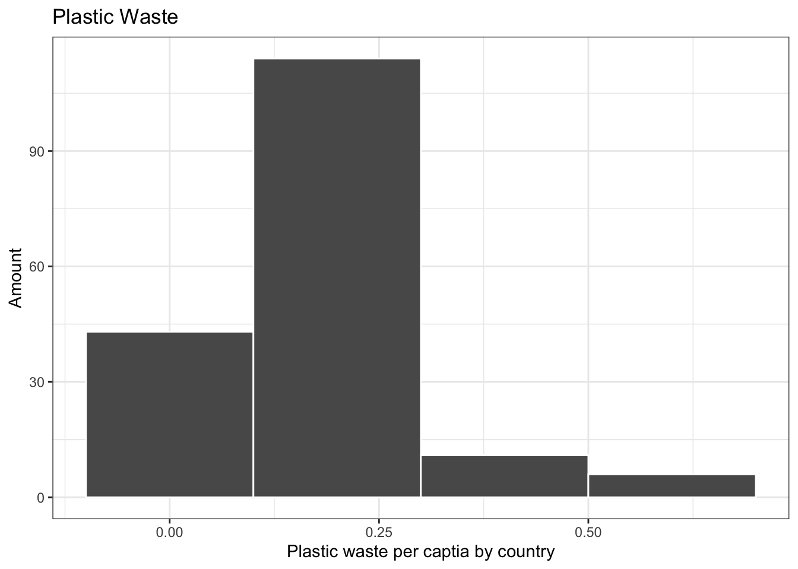
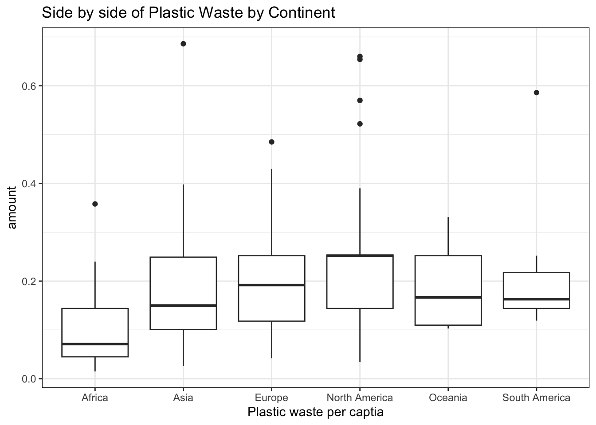
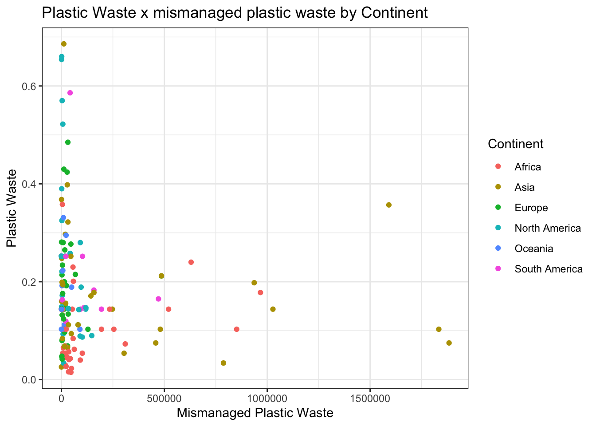
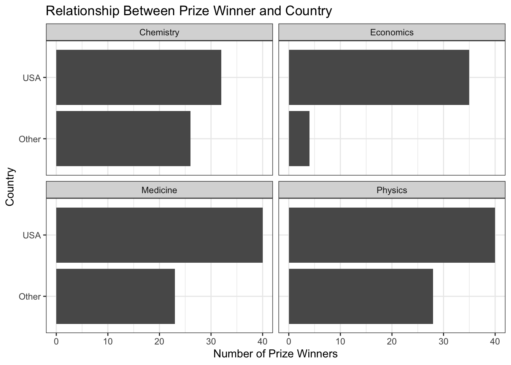
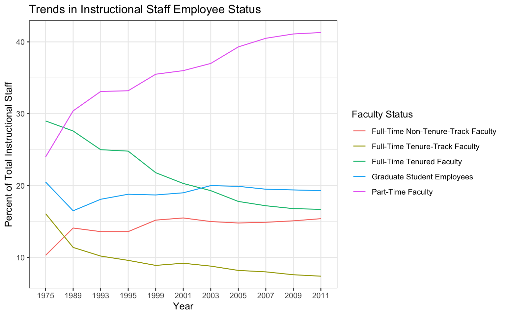
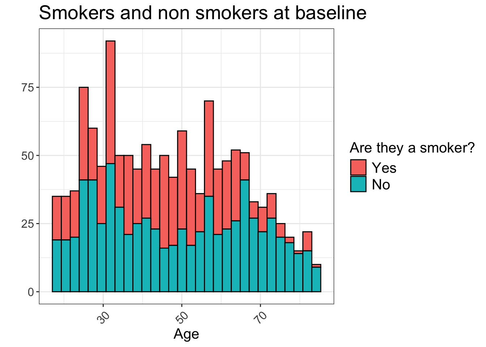
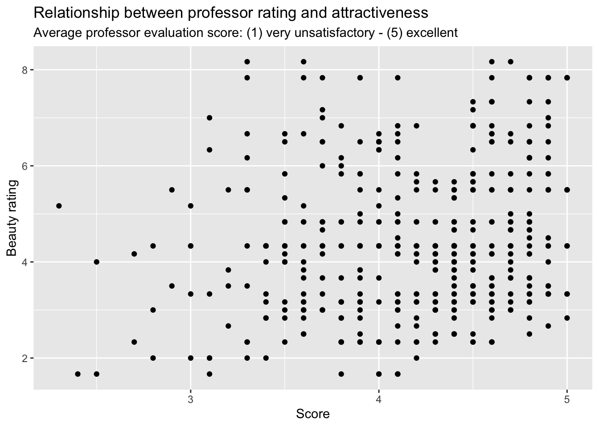
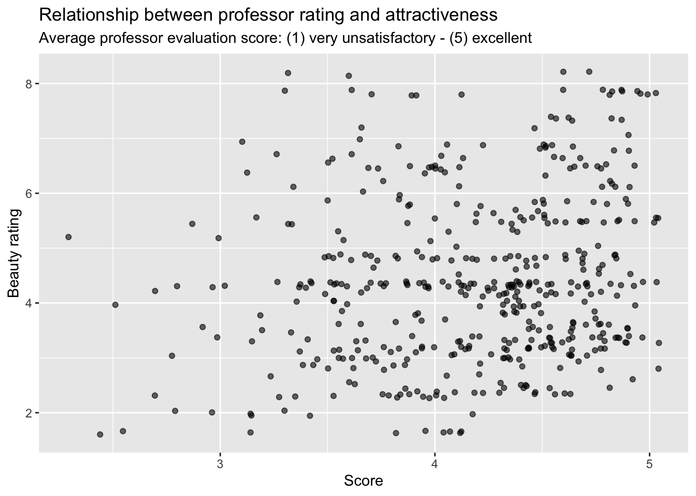

R Code Cheatsheet
Benjamin Egan
Created on 3/20/25
*This is a living document. As of right now, this document was updated on [3/20/2025]. The current date is:
April 21 2025
Useful Lines of Code
Up until this point in time, I have been looking back through each of my labs to pull and adapt lines of code. In this piece, I will be walking through all of my labs and extracting the helpful functions I have been repeatedly using. Each section of code is an example of how I have used each function. You can also examine the description r provides by plugging ?function_name() into the console
Filter()
true_plastic <- plastic_waste %>%
filter(plastic_waste_per_cap < 3, mismanaged_plastic_waste < 3000000, total_pop < 250000000, coastal_pop < 150000000)Filter() is aptly names, as it filters out certain data points. In this lab (https://datascience4psych.github.io/DataScience4Psych/lab02.html), I used filter to exclude certain countries from a visual.
Mutate()
Mutate() has been used across the class in different capacities. I’ve included examples below on how I have used mutate used:
nobel_living <- nobel %>%
mutate(country_us = if_else(country == "USA", "USA", "Other")
)Here mutate was used to create a binary categorical variable. It kept USA as USA and changed everything else to “other”
List - c(a, b, c, etc.)
lq_USA <- laquinta %>%
mutate(country = case_when(
state %in% state.abb ~ "United States",
state %in% c("ON", "BC") ~ "Canada",
state == "ANT" ~ "Colombia",
state %in% c("AG", "QR", "CH", "NL", "VE","PU","SL") ~ "Mexico",
state == "FM" ~ "Honduras"
))This is a more complex version of mutate(). Here I created a new country variable by taking all the cities and recoding them into their countries. The list function [c()] is useful for when you have multiple items you are attempting to recode.
Wide to Long transformation - pivot_longer()
staff_long <- staff %>%
pivot_longer(cols = -faculty_type, names_to = "year")pivot_longer() is useful for changing datasets from wide to long. The first argument is the data. The second argument, cols, is where you specify which columns to pivot into longer format – in this case all columns except for the faculty_type. The third argument, names_to, is a string specifying the name of the column to create from the data stored in the column names of data – in this case year.
Input - tibble()
string input should go in qutations while numbers would be input the same.
Name_of_table <- tribble(
~IV1, ~IV2, ~IV3,
"score","score","score"
)
#example
Kansas_Mask <- tribble(
~date, ~count, ~mask_status,
"7/12", 25.5, "mask",
"7/13", 19.8, "mask",
"7/14", 19.7, "mask",
"7/15", 20.5, "mask",
"7/12", 9.8, "no mask",
"7/13", 9.2, "no mask",
"7/14", 9.5, "no mask",
"7/15", 9.8, "no mask"
)Functions - function()
function_name <- function(thing_you_change){
#function pulled from lab 8 scripts
page <- read_html(url)
# scrape titles
titles <- page %>%
html_nodes(".iteminfo") %>%
html_node("h3 a") %>%
html_text() %>%
str_squish()
# scrape links
links <- page %>%
html_nodes(".iteminfo") %>%
html_node("h3 a") %>%
html_attr("href") %>%
str_replace(".", "collections.ed.ac.uk")
# scrape artists
artists <- page %>%
html_nodes(".iteminfo") %>%
html_node(".artist") %>%
html_text() %>%
str_squish()
# create and return tibble
tibble(
title = titles,
artist = artists,
link = links
)
}ggplot and graphing
A goal of this course was to get students comfortable graphing data. was to get students familiar with different ways to plot data using ggplot(). Below I include different types of plots you can create using ggplot():
Generally useful functions
theme_bw() removes all gray from the graph. labs() adds titles and labesl to the graphs. scale_color_manual() allows for you to manually set colors. fct_reorder(data, variable) allows for you to reverse the order of a variable.
Histogram - geom_histogram()
binwidth changes how many observations fit within each bar.
true_plastic %>%
ggplot(aes(
x = plastic_waste_per_cap)) +
geom_histogram(color = "white", binwidth = 0.2) +
theme_bw()+
labs(
x = "Plastic waste per captia by country",
y = "Amount",
title = "Plastic Waste"
)
Density plot - geom_density()
Alpha changes the opacity of the graph.
true_plastic %>%
ggplot(aes(
x = plastic_waste_per_cap,
color = continent,
fill = continent
)) +
geom_density(alpha = 0.7) +
theme_bw()+
labs(
x = "Plastic waste per captia",
y = "amount",
title = "Density map of Plastic Waste by country"
)
Boxplot - geom_boxplot()
true_plastic %>%
ggplot(aes(
x = continent,
y = plastic_waste_per_cap
)) +
geom_boxplot() +
theme_bw()+
labs(
x = "Plastic waste per captia",
y = "amount",
title = "Side by side of Plastic Waste by Continent"
)
Violin plot - geom_violin()
true_plastic %>%
ggplot(aes(
x = continent,
y = plastic_waste_per_cap
)) +
geom_violin() +
theme_bw()+
labs(
x = "Continent",
y = "Plastic Waste",
title = "Violin map of Plastic Waste by Continent"
)
Scatterplot - geom_point
true_plastic %>%
ggplot(aes(
x = mismanaged_plastic_waste,
y = plastic_waste_per_cap,
color = continent
)) +
geom_point() +
theme_bw()+
labs(
x = "Mismanaged Plastic Waste",
y = "Plastic Waste",
title = "Plastic Waste x mismanaged plastic waste by Continent",
color = "Continent"
)
Break down graphs by levels of a variable - facet_wrap()
Place the variable you want to be represented by the different graphs inside: (~variable of interest). Something to note is that the axes You can input (scale = “free”) to un
nobel_living_science %>%
ggplot(aes(
x = country_us,
)) +
facet_wrap(~category)+
theme_bw()+
geom_bar()+
coord_flip()+
labs(
x = "Country",
y = "Number of Prize Winners",
title = "Relationship Between Prize Winner and Country"
)
Making a line graph - geom_line
staff_long %>%
ggplot(aes(
x = year,
y = value,
group = faculty_type,
color = faculty_type
)) +
geom_line()+
theme_bw()+
labs(
x = "Year",
y = "Percent of Total Instructional Staff",
title = "Trends in Instructional Staff Employee Status",
color = "Faculty Status"
)
Changing parts of your visual - theme()
allows you to change axes, legends, the visuals, etc. You can use angle to change the angle of the axes
data("Whickham")
Whickham %>%
ggplot(aes(
x=age,
fill = fct_rev(smoker)
)) +
geom_histogram(color = "black")+
theme_bw()+
labs(
x = "Age",
y = "",
title = "Smokers and non smokers at baseline",
fill = "Are they a smoker?"
)+
theme(plot.title = element_text(size = 20),
axis.title = element_text(size = 15),
axis.text = element_text(size = 12),
legend.title = element_text(size = 15),
legend.text = element_text(size = 15),
axis.text.x = element_text(angle = 45, vjust = 0.5, hjust=.5)
)## `stat_bin()` using `bins = 30`. Pick better value with `binwidth`.
Add text to a graph - geom_col()
Handling categorical data - geom_jitter()
This data is a likert scale, hiding the true amount of data. Can use jitter to shift datapoints vertical (height =) or horizontal (width =).
attractive_score <- evals %>%
ggplot(aes(
x = score,
y = bty_avg
))+
labs(
x = "Score",
y = "Beauty rating",
title = "Relationship between professor rating and attractiveness",
subtitle = "Average professor evaluation score: (1) very unsatisfactory - (5) excellent"
)
attractive_score + geom_point()
attractive_score + geom_jitter(width = .05, alpha = .6)
Line of best fit - geom_smooth()
attractive_score + geom_smooth(se = FALSE, color = "black", span = 1)
Other useful functions
!(Here is where your caption should be, but change these parentheses to [])(File Name) - Lets you embed an image